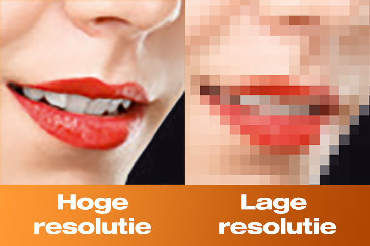

Het RGB model bestaat uit de kleuren rood, groen en blauw. Het kleurmodel wordt gebruikt om kleuren
weer te geven op elektronische schermen. Voorbeelden hiervoor zijn televisies en mobiele apparaten.
In het model worden kleuren gemaakt door verschillende hoeveelheden rood, groen en blauw licht
met elkaar te combineren.
CMY-K model
Het CMY(K) model bestaat uit de kleuren cyaan, magenta, geel en zwart. Het model wordt het
meest gebruikt in de drukindustrie voor het afdrukken van kleurenafbeeldingen. KLeuren
worden gemaakt door pigmenten te mengen en licht te absorberen.
Wanneer alle kleuren in volle sterkte worden gecombineerd onstaat zwart.
Hieronder zie je een afbeelding van beide kleurmodellen.
Pixels:
Een pixel is de kleinste eenheid van een digitale afbeelding of een digitaal beeldscherm.
Het woord 'pixel' betekent 'picture element'. Door meerdere pixels met elkaar te combineren wordt een
afbeelding gevormd. Zo bestaat een Full HD beeld van 1920 x 1280 pixels uit ruim 2,4 Megapixel.
De rangschikking en het aantal pixels beïnvloeden de resolutie (aantal) en scherpte van een beeld of een
scherm. Ook spelen pixels een zeer belangrijke rol in vrijwel alle digitale, zichtbare media.
Hieronder zie je een afbeelding met veel Pixels die verschillende kleuren
hebben en samen een afbeelding vormen.
Resolutie
Resolutie zorgt voor de helderheid en de scherpte van een afbeelding, video, beeldscherm of ander visueel element.
Hoe hoger de resolutie is hoe meer pixels er worden gebruikt. Dan krijg je als resultaat een betere weergave van uw beeldscherm.

Heeft u behoefte aan meer uitleg over resolutie klink dan op de link en bezoek de pagina.
Extra uitleg resolutie